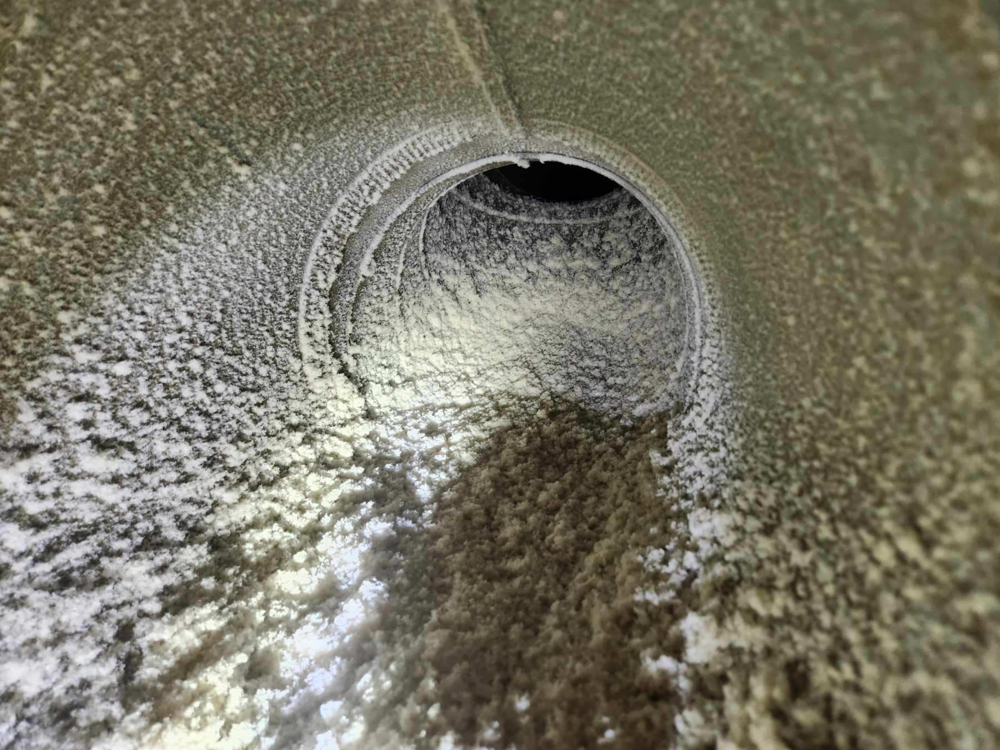
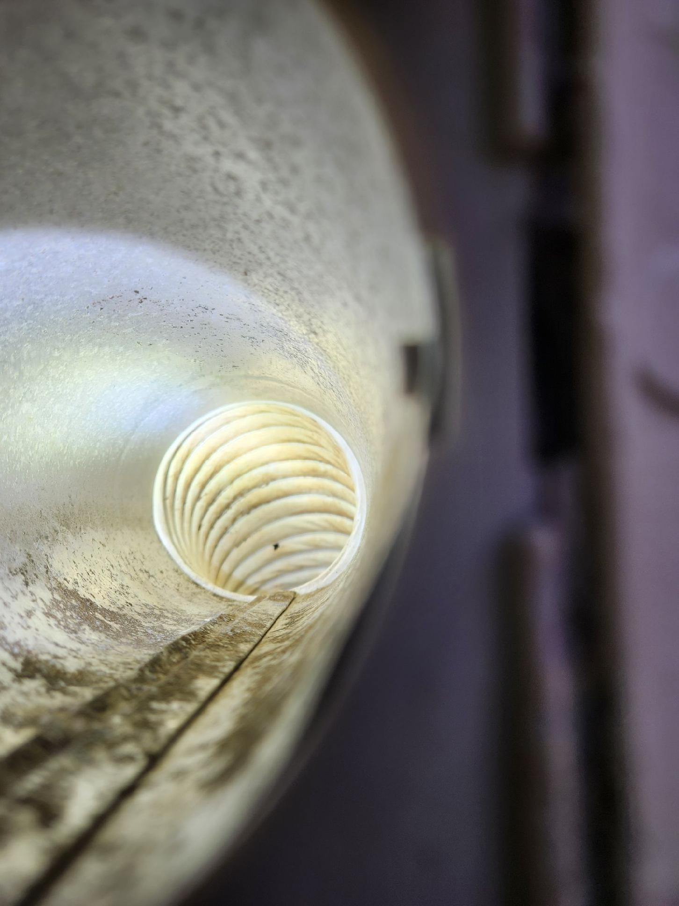
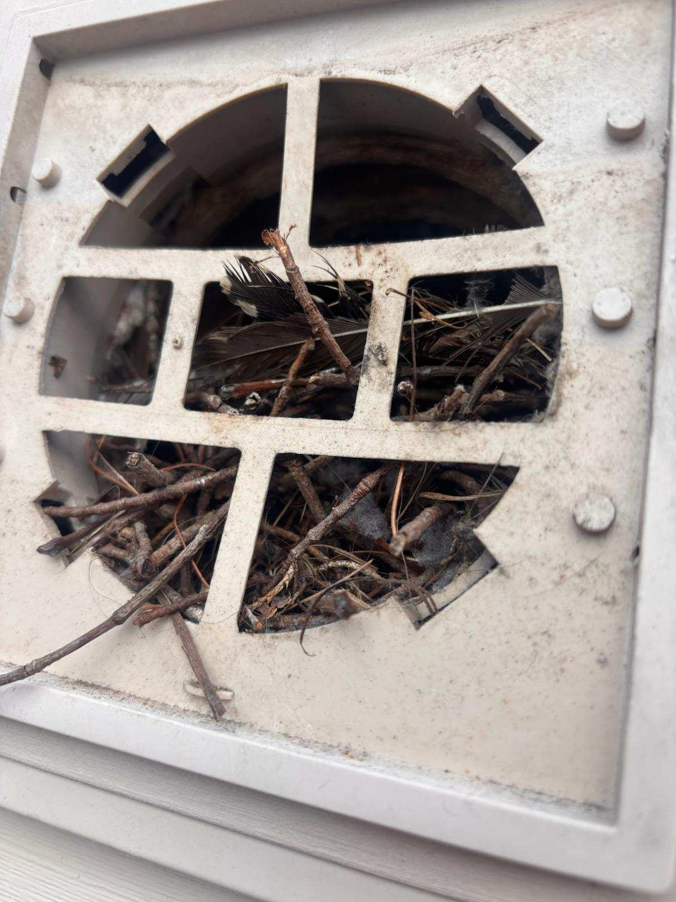
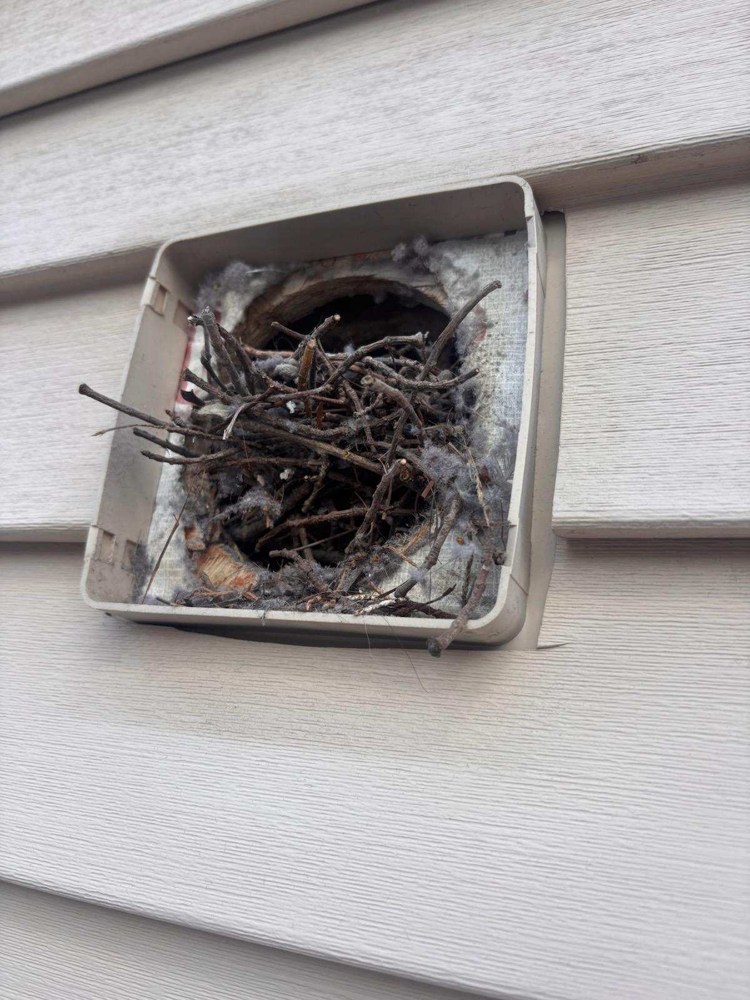
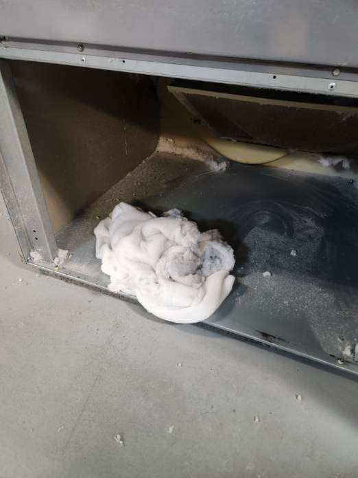
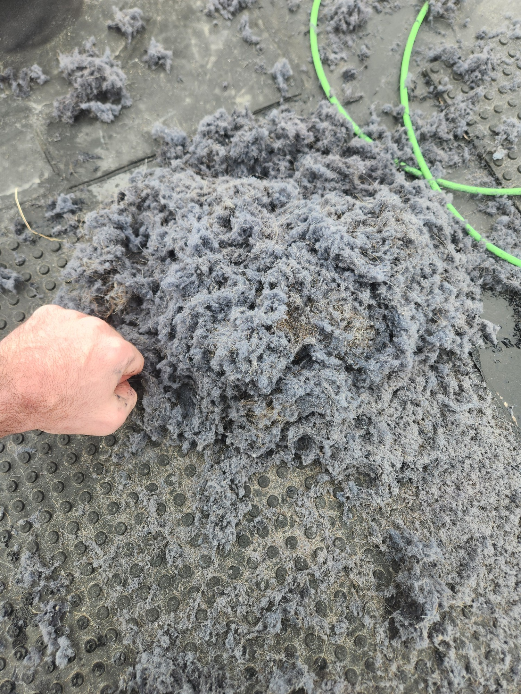
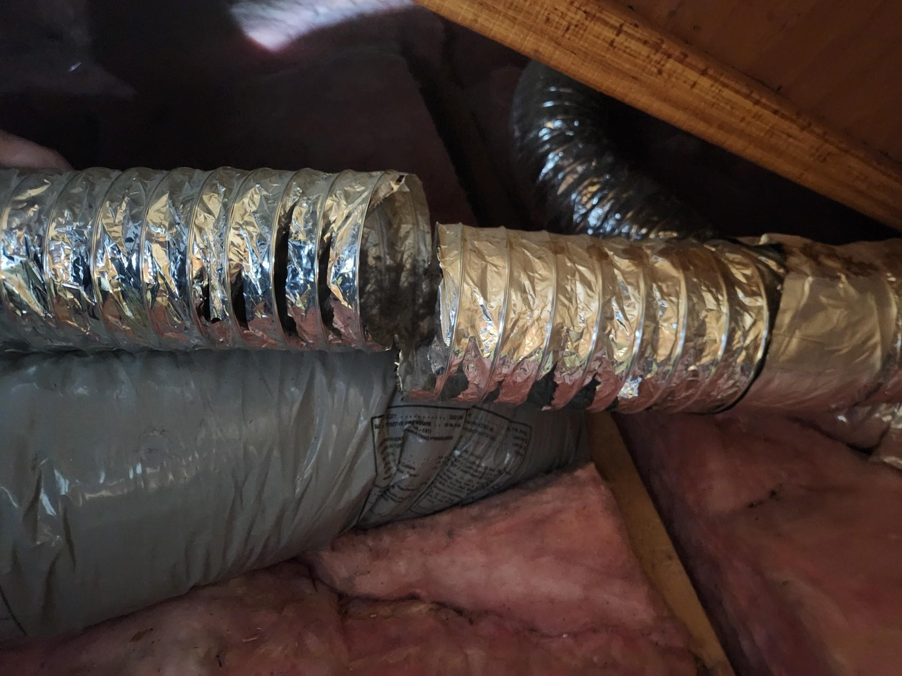
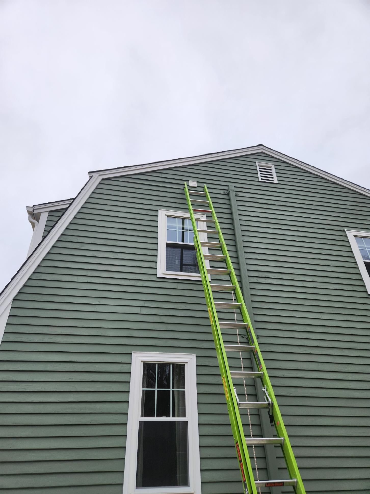
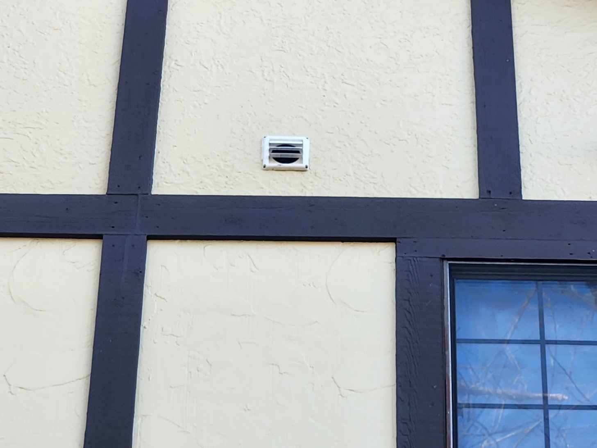

Photos from actual dryer vent cleaning and installation jobs across Jacksonville and Northeast Florida.
These two photos are from the same vent — taken before and after a single cleaning appointment.

Typical lint accumulation found inside a residential dryer vent — highly flammable and already restricting airflow. This level of buildup is common in Jacksonville homes that haven't been serviced in over a year.

The same vent after a full professional cleaning. Clear airflow, no lint buildup, and dramatically reduced fire risk. This is what every dryer vent should look like.
These are the hazards we find and fix on the job — many homeowners have no idea they exist.

A bird's nest built inside a dryer vent with the protective cage still attached. Many standard vent caps don't prevent birds from nesting inside, creating a complete airflow blockage.

The same vent with the cage removed, showing the extent of the blockage. This dryer couldn't exhaust at all. Bird nests are one of the most common external blockages we find in Northeast Florida.

A dense lint bundle pulled from the base of a dryer vent. This is a serious fire hazard — this level of buildup can cause a dryer to overheat or stop working entirely.

The lint removed from a single residential dryer vent after just one year — even in a home where the lint trap was cleaned after every load. The lint trap catches only a fraction of what passes through.

A disconnected vent section using incorrect flexible plastic duct — a code violation and fire hazard. Dryer vents require rigid or semi-rigid metal duct. We identify and repair issues like this on every job.

New vent installation for a second-floor laundry room in Jacksonville. Proper routing, approved materials, and the correct exterior termination — done right from day one.

A properly cleaned exterior vent cap — fins open fully when the dryer runs, allowing unrestricted exhaust. A vent cap that won't open is one of the most reliable signs of a blocked vent.
Same-day service available across Jacksonville and Northeast Florida.
904-867-0816